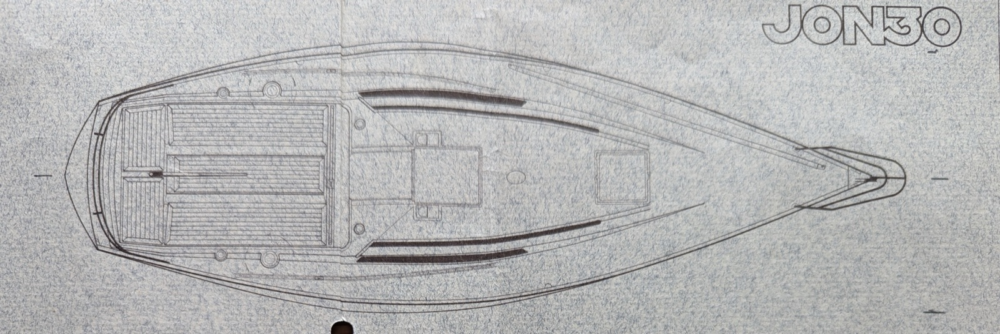
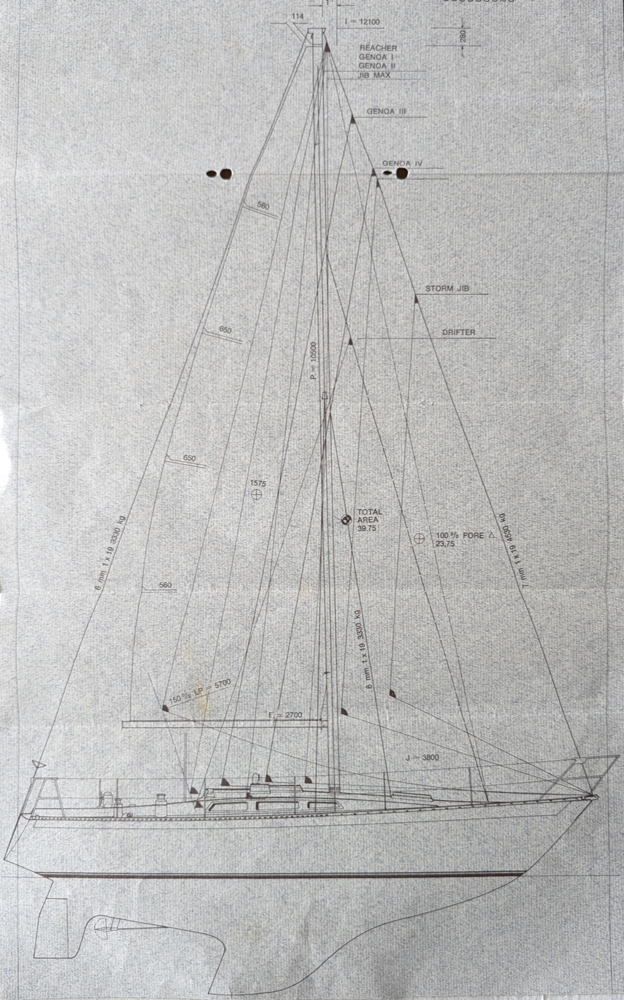
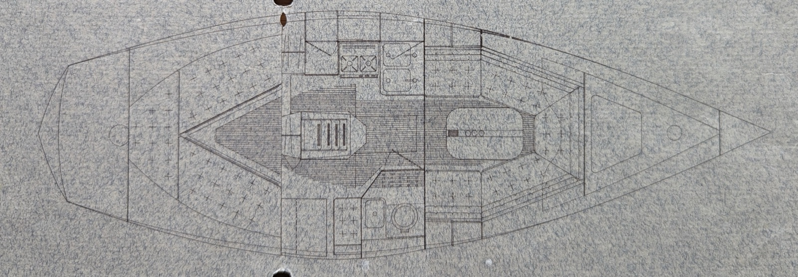

The Jon 30
The boat this blog is about

A Jon 30 stands higher out of the water than a thirty-foot boat usually does. The sheer is long and low, the bow is fine, and the transom leans forward, the way transoms did for about fifteen years and have not since. The hull is thick. You can hear it if you knock on it.
The weight figures disagree. The 1973 newspaper gave 3,850 kilos, the boat databases say around 3,900, sale listings run up to 4,800, and ours is registered at four and a half tonnes. Whichever is closest, it is a lot for nine metres, and most of what follows comes from it: how she behaves in a gale, how she behaves in a light breeze, why owners keep them, and why the sailing press of the day did not like them.
Mäntsälä, 1973
Mäntsälä is an inland town north-east of Helsinki, on the road to Lahti. There is no water. From June 1973 there was a shed on the municipal industrial estate where a man called Jorma Nyman built offshore sailing yachts.
The factory opened on 12 June 1973, the day the first plug was lifted into the hall. By November Nyman was in the local paper looking for staff. JONMERI OY NEEDS NEW WORKERS, ran the headline in Mäntsälän Uutiset on 21 November 1973. There was plenty of work and not enough hands. He would train anyone willing, young lads in particular. The work was not difficult, he said, though it took some learning, and anyone interested should come by and talk it over. He added that the trade suited women perfectly well. The only difficulty was that the hall had one set of changing rooms, and if he took women on full time a second would have to be built. This was worth considering seriously, he told the reporter.
The reporter's own explanation for the shortage of applicants was that Mäntsälä is a long way from the sea.
The orders had to be delivered by spring. The men were working long overtime and Nyman said he had been in on Saturdays as well. The photograph beside the article shows him at a bench with a hull model in front of him. He made the models himself.
A second article the following February gave numbers: seven boatbuilders, one boat leaving the shed a month. Asked what makes a good boatbuilder, Nyman said cleanliness and precision. Teak and resin are expensive. A wasted offcut a few centimetres long costs more than an hour of a man's wages. You cannot afford to rush.
The first boat out of the shed was the Jon 30, and he had drawn it himself. A finished boat cost 70,000 to 80,000 markka.
The name is his own, folded in half: Jon from Jorma Nyman, meri from the Finnish for sea. The boats were badged Jon and the yard was Jonmeri, and over twenty years the two names blurred. The same hull gets advertised as a Jon 33 and a Jonmeri 33 in the same week.
Nautor
Nyman had worked at Nautor, the yard on the west coast that had been building Swans since 1966. He was in the marketing department. He spent his working days selling the idea of the perfect Finnish offshore yacht, then went off and built one.
The resemblance is not in dispute. When Nyman followed the 30 with a 33, a longer boat with the deck widened along its flat sections, people looked at it and saw a Swan 38, and lawyers became involved.
Nautor brought the case, at the insistence of Sparkman & Stephens, whose drawings the Swan was. Nautor had less appetite for the fight than its designers did, and in the end talked them out of taking it further. What was agreed, if anything was, is not on record. No boat was withdrawn and Nyman went on building.
The nickname stayed. In Finland the 33 is pikku-Swan, the little Swan, and it is meant kindly. A story gets repeated in Finnish forums about a man at a boat show who had just ordered a Swan, standing in front of a Jon of the same size and swearing quietly.
The test
Around 1975 a Finnish boating magazine sailed a Jon 30 and did not like it.
The verdict was hard. Poor lateral balance, strong weather helm, a rudder too small for the hull that could lose its grip when pressed. The tester suggested the mast or the keel was in the wrong place. A magazine verdict moved money in Finland at the time.
Nyman took it badly and never submitted another Jon for testing. The boats went out unreviewed and their reputation was made by the people who owned them.
Owners mostly agree with the test and it has not affected their affection for the boat. It is slow in light air. The rig is small, the boom is short, and a run in a summer breeze is described by one long-term owner as poison. It is awkward in reverse. The rudder is small.
At twelve metres a second on the wind, about twenty-three knots, full sail, family aboard, it goes very well. That is an owner writing about the boat the magazine condemned. Families have used Jon 30s as summer cottages from ice-out to the sleet of October, out in the archipelago, in the dark, without much interest in the handicap rating. Pomminkestävä, bomb-proof, is the word that keeps coming up in Finnish. The laminate belongs to an older way of building. It does not break when it touches a rock.
Of the boats Nyman built, the 30 reached the most people. It was the cheapest and the earliest, and it and the 33 were built in roughly equal numbers. Finnish sailors over a certain age know it on sight, and will generally want to tell you about it.
The travels
The Finnish forums state, without ceremony, that Jon 30s have crossed the Atlantic, and then that almost none of it was written down. Documented pretty poorly, as one owner puts it.
Some of it is surfacing in the Jon 30 owners' group on Facebook, which is the nearest thing the type has to a class association.
On 1 August 1985 s/y Take Off left the quay at Helsinki Market Square for the Caribbean and Florida. There is a photograph of her going out past the cranes of the South Harbour under main and genoa, sail number L-662, a Finnish flag on a pole astern, looking like a boat leaving for a long weekend in the archipelago. Mauri Kaipainen notes that it got lively at Harmaja, four miles from the dock.
There were five of them on the crossing. They fitted fine, he says, since one or two were always on watch. Every locker was full of food. They were away through 1985 and 1986.
Heikki Kauppi took Blue Chip west almost forty years later. He sailed to Northern Ireland one summer and left the boat there for the winter. In April he tried to work down to the south coast, was stopped by Atlantic southerlies and the sea they built, and hauled out again at Killybegs. By June it had eased and he had a good run to Kinsale, past the Fastnet. Blue Chip lay on a mooring at Kinsale waiting for a new crew and a passage to the Azores, with the idea of coming home over following summers by way of Canada and Greenland. The Jon has coped well in these conditions too, he wrote.
The Azores attempt turned back after two days with four aboard. At a hard angle of heel the fuel tank breather took seawater into the tank. It had never done it before. Kaipainen, reading this forty years after his own crossing, said he had had trouble with the same thing and had rebuilt it somehow, though he could not remember how.
There is no class association, no register and no owners' magazine. A Facebook group in Finnish and a few forum threads are the whole record of the type.
Ours was built in 1976, one of the early ones, with the taller through-deck rig. The original Volvo, which everyone agrees was too small, is long gone. She has a Volvo Penta MD2020, built in 2005 and fitted second-hand in 2025 with under 500 hours on it.
What follows on this blog is where she has been since.
Appendix A: numbers

| Designer | Jorma Nyman |
| Builder | Jonmeri Oy, Mäntsälä, Finland |
| Type | Masthead sloop, IOR-era half-tonner |
| Production | Mid-1970s to 1978 |
| Built | Around 50, on owners' estimates. No factory records have turned up |
| Length overall | 9.04 to 9.06 m |
| Waterline | 6.9 to 7.0 m |
| Beam | 3.03 m |
| Draft | 1.70 m |
| Displacement | Figures disagree: 3,850 to 3,900 kg on paper, 4,500 to 4,800 kg as registered |
| Ballast | Lead, about 1,700 kg, on 11 bolts of 20 mm |
| Keel and rudder | Fin keel, separate inboard-hung spade rudder |
| Hull | Hand-laid solid single-skin GRP |
| Deck | Balsa-cored sandwich GRP |
| Rig | Masthead sloop, keel-stepped mast. Two variants: a taller through-deck rig at about 14 m and a shorter deck-stepped rig at about 11.6 m |
| Headsails | Genoa I 35.2 m², Genoa II 30.9 m² |
| Steering | Tiller or wheel, both factory options |
| Engine, original | Volvo Penta MD6A 10 hp, or MD11 |
| Tankage | Fuel about 65 to 70 L, water 65 L |
| Berths | 4 to 6 |
| Headroom | About 1.80 m |
| Interior | Teak |
| Handicap | LYS about 1.05 to 1.09 |
| Market | €9,000 to €17,000 in Finland |

Layout. Coming down the companionway there is an L-shaped galley to port with two sinks and a heads to starboard, and aft of the heads a proper chart table with its own forward-facing seat, which is unusual in a thirty-footer. Two quarter berths run aft under the cockpit. They are a metre wide and every owner who mentions them says how good they are. Forward there is no separate cabin. The U-shaped saloon wraps round and gives onto a pipe berth in the forepeak, so you climb over the settee to get there. Owners call it good at sea and impractical at anchor. Many hulls were sold part-finished for owner completion, so no two interiors are alike; at least five versions are known.
Sails. The boat is under-canvassed, so headsail choice matters more than on most. Owners are close to unanimous that a large genoa is not optional.
Appendix B: what happened to Jonmeri
Nyman built four boats over about twenty years, and they got bigger as he went.
Jon 30, mid-1970s to 1978, around 50 built. The first. Nine metres, and the subject of this blog.
Jon 33 / Jonmeri 33, 1977 to 1998, around 50 built. Ten metres, and the boat that made the yard's name, built on the 30's deck widened along the flat sections. This is the pikku-Swan. Long passages have been routine in them. One, Vanda, circumnavigated in 1984 to 1986, and another crossed the Atlantic in the 1998 ARC in eighteen days and won its class. A MkII appeared in the late 1990s with a new keel and rudder by Karl-Johan "Kamu" Stråhlman, though very few were built.
Jonmeri 40, around 40 built. Twelve metres. The earliest went out as hull and deck for owner fit-out and later ones were finished at the yard, with a 40 Classic shown at the 1993 Helsinki Boat Show. Most were exported to the United States, Japan and the Netherlands. Norwegian sales copy states the yard's ambition plainly: they meant to beat Swan and Baltic.
Jonmeri 48 and 482. The flagships, and genuinely rare.
There is a consistent thread in the owner lore about how Nyman ran the place. The smaller boats could go out as kits, but the big ones were finished at the yard under his eye, because the yard's name was on them.
Production of the larger models moved away from Mäntsälä in the later years, some of it to Teijo, and Nyman wound the operation down in the 1990s. The moulds for the 33, 40 and 48 are now owned by Maestro Boats, a small yard at Öja outside Kokkola on the west coast, an hour from where the Swans are built. They will still build a Jonmeri to order, at something like one large boat a year.
The Jon 30 moulds were not part of that. They were used once more around the turn of the 1990s for an owner-build, and after that the trail goes cold. No Jon 30 has been built since, and none is likely to be.
A note for anyone searching company records: an entity called Jonmeri Yachts Oy exists and is a bankruptcy estate, but it began trading in 2008 and has nothing to do with the boats of the 1970s. Finnish sales listings occasionally attribute 1976 hulls to it, incorrectly.
Sources: "Jonmeri Oy kaipaa uusia työntekijöitä", Mäntsälän Uutiset, 21 November 1973, and a follow-up in the same paper in February 1974; the Jon 30 – Purjehtijat group on Facebook, in particular posts by Mauri Kaipainen and Heikki Kauppi, quoted with the details as they gave them; forum threads on Suomi24; the Swedish boat database Sailguide; Finnish and Norwegian brokerage listings; and the S/Y La Vida owner blog. Where accounts conflict, on production numbers, dimensions, or who exactly sued whom, I have said so rather than picking a winner.